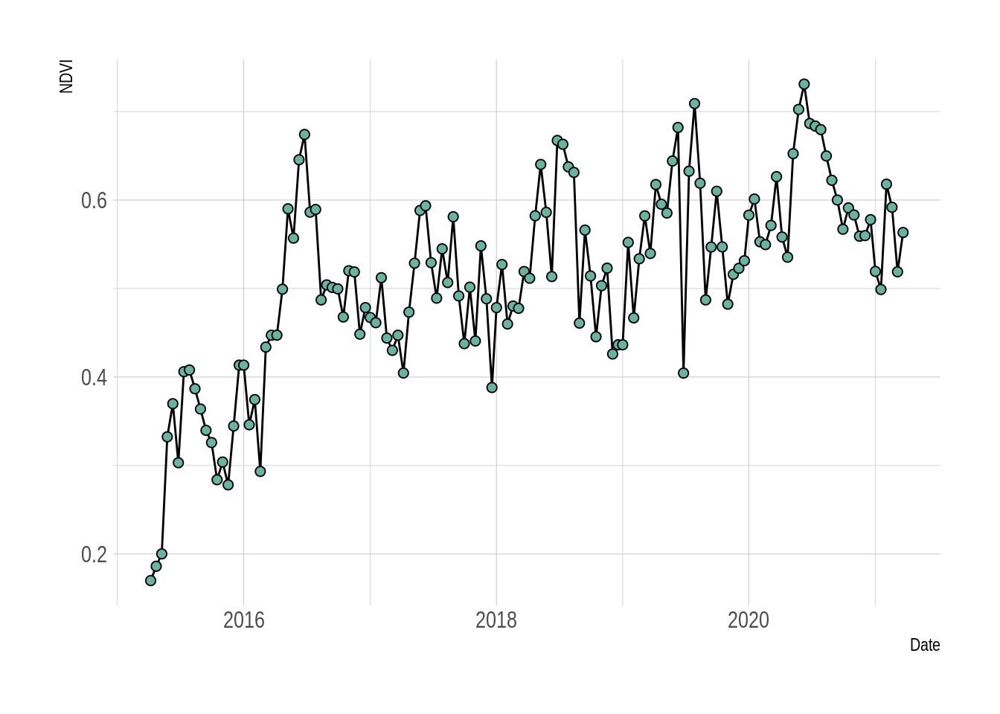
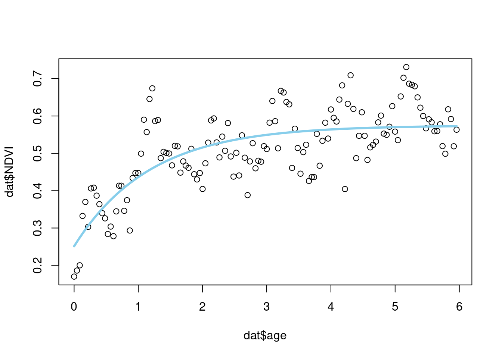

7 Going Bayesian
While ecological forecasting and decision support can be done with traditional statistics (often termed “frequentist statistics”) it is generally much easier to do in a Bayesian statistical framework.
Bayesian approaches have several advantages:
NOTE: there are frequentist approaches for doing much of this, but they are typically cumbersome “add-ons” that require many additional assumptions. Once you’re using Bayes you can achieve all this without much extra work.
- They are typically focused on estimating what properties are (i.e. the actual value of a particular parameter) and not just establishing what they are not (i.e. testing for significant difference (null hypothesis testing), as is usually the focus in frequentist statistics)
- They can easily treat all terms as probability distributions, making it easier to quantify, propagate and partition uncertainties throughout the analysis probabilistically (more on this later)
- They are highly flexible, allowing one to build relatively complex models with varied data sources (and/or of varying quality), especially Hierarchical Bayesian models
- They are inherently iterative, making it easier to update predictions as new data become available
In this section I aim to provide a brief and soft introduction to Bayesian statistics and and illustrate it using the postfire recovery example we worked on in the pair-coding practical.
Before I can introduce Bayes, there are a few basic building blocks we need to establish first. The main one is the concept of likelihood and the estimation of maximum likelihood, since this is a major component of Bayes’ Theorem.
NOTE: This really is a minimalist introduction that only provides the tidbits I need you to know to follow the rest of the module. This note is a proviso to make it clear that I am withholding important details, before anyone accuses me of lies of ommission.
7.1 Learning objectives
- How Least Squares works, and why this is a major limitation
- especially with relation to the “data model”
- How Maximum Likelihood works, and how it gets around the limitations of Least Squares by allowing for more flexible data models
(- dealing with the second assumption of Least Squares? identically independently distributed (the iid assumption)?)
- The difference between likelihood and probability, and why it’s easier to deal with uncertainty if it is expressed in the context of probability
- How converting likelihood to probability gives you Bayes Theorem
- The “unexpected” advantages of Bayes…
- Priors
- Hierarchical models
- data vs process vs parameter models
7.2 Least Squares
But before I introduce Maximum Likelihood, let’s start with Least Squares, which is probably what you are most familiar with.
Traditional parametric statistics like regression analysis and analysis of variance (ANOVA) rely on Ordinary Least Squares (OLS). There are a few other flavours of least squares that allow a bit more flexibility (e.g. nonlinear (NLS) that we used in the practical in section 6, partial least squares, etc), but I’m not going to go into these distinctions.
In general, least squares approaches fit models by minimizing the sums of the squared residuals. Let’s explore this by looking at an example of a linear regression.

Figure 7.1: A hypothetical example showing a linear model fit.
Here the model (blue line) is drawn through the cloud of points so as to minimize the sum of the squared vertical (y-axis) differences (i.e. residuals) between each point and the regression line.
Let’s redraw this highlighting the residuals:

Figure 7.2: The linear model highlighting the residuals.
So the grey lines linking each observed data point to the regression line are the residuals. Note that they are vertical and not orthogonal to the regression line, because they represent the variance in Y (Reward in this case) that is not explained by X (Effort in this case). The open black circles are the Y-values that our linear model predicts for a given X-value. There is no scatter in the predicted values, because the scatter is residual variance that the model cannot account for and predict.
Now let’s have a look at a histogram of the residuals:

Figure 7.3: A histogram of the residuals from the linear model above.
As you can see in this case, the residuals approximate a normal distribution (or should, since I generated them from a normal distribution…). You’ll recall that this is one of the assumptions when using linear models or ANOVA (often termed “homoscedasticity” or “homogeneity of variance”) - i.e. it is an assumption of the Least Squares method. Least squares cannot handle residuals that are not normally distributed. If the residuals were not normally distributed, then either we are fitting the wrong model (e.g. we should consider a non-linear rather than a linear model), or our assumptions are violated and we should not be using this technique!
The reason Least Squares requires this assumption is that for minimizing the sums of squares to work, a unit change in the residuals should be scale invariant. In other words, the difference between 1 and 2 needs to be the same as the difference between 101 and 102. This is only the case when the residuals are normally distributed (versus log-scale for example). If the scale is variable, then minimizing the sums of squares does not work. People often try to get around the assumption of homogeneity of variance by tranforming their data (e.g. log or arcsine transform) to try to get them to an invariant scale.
So where does significance testing come into it? Well significance testing is the ability to reject (or to fail to reject) the null hypothesis. In the case of a linear model, the null hypothesis is that the slope is zero (i.e. there is no effect of X on Y) and sometimes includes that the intercept should be zero too (although this is not usually required). I don’t have the time to go through the full explanation of how the null hypothesis is tested in this lecture, but it is useful to highlight that the linear model is only considered useful when you can reject the null hypothesis (usually at an alpha of P < 0.05).
7.3 Data versus process models
It’s useful at this stage to make a distinction between data models and process models.
- The process model is the bit you’ll be used to, where we describe how the model creates a prediction for a particular set of inputs or covariates (i.e. the linear model in the case above).
- The data model describes the residuals (i.e. the mismatch between the process model and the data). It is also often called the data observation process.
Because of the reliance on minimizing the sums of squares, the data model in a Least Squares analysis can only ever be a normal distribution (i.e. homogeneity of variance). This is suboptimal because:
- the data model can take many other forms
- e.g. Binomial coin flips, Poisson counts of individuals, Exponential waiting times
- this is where Maximum Likelihood comes into it’s own
- there are times when one would like to include additional information in the data model
- e.g. sampling variability (e.g. different observers or instruments), measurement errors, instrument calibration, proxy data, unequal variances, missing data
- this is where Bayesian models come into their own
7.4 Maximum likelihood
Maximum likelihood is a method for estimating model parameters
The likelihood principle states a that parameter value is more likely than another if it is the one for which the data are more probable.
Maximum Likelihood Estimation (MLE) applies this principle by optimizing the parameter values such that they maximize the likelihood that the process described by the given model produced the data that were observed.
If this seems like a tongue-twister full of double-negatives that’s because it is…
Viewed differently, when using MLE we assume that we have the correct model and apply MLE to choose the parameters so as to maximize the conditional probability of the data given those parameter estimates. The notation for this conditional probability is \(P(Data|Parameters)\).
This process leaves us knowing the likelihood of the best set of parameters and the conditional probability of the data given those parameters \(P(Data|Parameters)\). The problem is that in the context of forecasting (and many other modelling approaches) what we really want is to be able to express the uncertainty in the parameter estimates as probabilities. In other words, we are interested in the conditional probability of the parameters given the data \(P(Parameters|Data)\). To get there, we need to apply a little probability theory, which provides a somewhat surprising and very useful byproduct.
First, let’s brush up on our probability theory…
7.4.1 Joint, conditional and marginal probabilities
Here we’ll look at the interactions between two random variables and illustrate it with the Venn diagram below.

Figure 7.4: Venn diagram illustrating ten events (points) across two sets \(x\) and \(y\).
First, we can define the joint probability, \(P(x,y)\), which is the probability of both \(x\) and \(y\) occurring simultaneously, which in the case of Figure 7.4 is the probability of occurring within the overlap of the circles = 3/10.
Second, based on the joint probability we can define two conditional probabilities, the probability of \(x\) given \(y\), \(P(x|y)\), and the probability of \(y\) given \(x\), \(P(y|x)\). In the context of the Venn diagram these would be the probability of being in set \(x\) given that we are only considering the points in set \(y\) (= 3/6) and the probability of being in set \(y\) given that we are only considering the points in set \(x\) (= 3/7).
Last, we can define two marginal probabilities \(P(x)\) = 7/10 and \(P(y)\) = 6/10.
From this, we can see that the joint probabilities \(P(x,y)\) and \(P(y,x)\) are identical (= 0.3).
We can also show that the joint probabilities are the product of the conditional and marginal probabilities:
\(P(x,y)\) = \(P(x|y)\) * \(P(y)\) = 3/6 * 6/10 = 0.3
And by the same token:
\(P(y,x)\) = \(P(y|x)\) * \(P(y)\) = 3/7 * 7/10 = 0.3
Why I’m telling you all this is because this means that we can derive what we want to know, \(P(Parameters|Data)\), as a function of what our maximum likelihood estimation has given us, \(P(Data|Parameters)\)…
7.5 Bayes’ Theorem
Here’s an example
We’ll build on the fynbos postfire vegetation recovery example we used in the practical, where we looked at time series of a satellite measure of vegetation greenness or health - the normalized difference vegetation index (NDVI) from the MODIS satellite mission.
Before, we were fitting the model using least squares, which optimizes the parameters of the model to minimize the sum of the squares of the residuals (the residuals being the difference between each observed and fitted value provided by a model).
Maximum likelihood
Add Postfire example
- demonstrate p-value by fitting lm to NDVI
- demonstrate fitting with MLE
- fit negative exponential and compare likelihoods

Figure 7.5: Time-series of 16-day normalized difference vegetation index (NDVI) from the MODIS satellite mission following fire in a seasonal wetland in the Silvermine section of Table Mountain National Park.
If we want to know the rate of vegetation recovery, we could fit a linear model to this and examine the slope, like so:
# Here I fit a linear model to a dependent variable "NDVI" as a function
# of the independent variable "calendar_date", both of which are columns
# in the dataframe "dat"
# Fit model
fit_linear <- lm(NDVI ~ calendar_date, data = dat)
# Summarize and print output
summary(fit_linear)##
## Call:
## lm(formula = NDVI ~ calendar_date, data = dat)
##
## Residuals:
## Min 1Q Median 3Q Max
## -0.215858 -0.051878 -0.002463 0.052636 0.237306
##
## Coefficients:
## Estimate Std. Error t value Pr(>|t|)
## (Intercept) -1.5102413 0.1921736 -7.859 0.00000000000106 ***
## calendar_date 0.0001147 0.0000109 10.522 < 0.0000000000000002 ***
## ---
## Signif. codes: 0 '***' 0.001 '**' 0.01 '*' 0.05 '.' 0.1 ' ' 1
##
## Residual standard error: 0.08099 on 136 degrees of freedom
## Multiple R-squared: 0.4488, Adjusted R-squared: 0.4447
## F-statistic: 110.7 on 1 and 136 DF, p-value: < 0.00000000000000022From the p-value you can see that the result is highly significant - i.e. there is very little probability that the slope and intercept are zero - but does that mean we’ve done this right?
Let’s try adding the linear model to our plot:
Figure 7.6: NDVI timeseries overlain with a linear regression.
Do you think a linear model is appropriate here?
Let’s have a look at the residuals:
par(mfrow = c(2,2)) # Make a panel plot 2 by 2
plot(fit_linear)
par(mfrow = c(1,1)) # Reset graphical parameters to single plotIt’s actually not too bad, but there’s still lots of interesting stuff going on there. I’m not sold that a linear model is the best we can do. Let’s try something else:
# Here I fit a negative exponential model to a dependent variable "NDVI"
# as a function of the independent variable "age" (years since the fire),
# both of which are columns in the dataframe "dat"
# Convert "calendar_date" to postfire age in days since fire
dat$age <- (as.numeric(dat$calendar_date) - min(as.numeric(dat$calendar_date), na.rm = T))/365.25
# Guesstimate list of initial parameter estimates to feed to the model fitting function
start <- list(alpha = 0.2, lambda = 0.5, gamma = 0.4)
# Fit the model
fit_negexp <- nls(NDVI ~ alpha + gamma * (1 - exp(- age/lambda)), data = dat,
start = start, trace = F, control = nls.control(maxiter = 500))
# Plot the data points
plot(dat$age, dat$NDVI)
# Overlay the fitted model on the plot
lines(dat$age, predict(fit_negexp, list(x = dat$age)), col = 'skyblue', lwd = 3)
Here we’ve fit the negative exponential function:
\[\begin{gather} \text{NDVI}_{i,t}=\alpha_i+\gamma_i\Big(1-e^{-\frac{age_{i,t}}{\lambda_i}}\Big) \end{gather}\]
Where:
- \(\alpha\) is the NDVI at time 0 (i.e. directly after the fire)
- \(\gamma\) is the maximum average increase in NDVI
- i.e. the maximum NDVI reached by the blue curve is \(\alpha + \gamma\)
- \(\lambda\) is the rate of increase in NDVI
Since \(\alpha\) and \(\gamma\) are reasonably intuitive to read off the graph we can easily eyeball whether the model estimates for those parameters are any good:
summary(fit_negexp)##
## Formula: NDVI ~ alpha + gamma * (1 - exp(-age/lambda))
##
## Parameters:
## Estimate Std. Error t value Pr(>|t|)
## alpha 0.25107 0.02887 8.695 0.0000000000000104 ***
## lambda 1.17687 0.21396 5.500 0.0000001835574518 ***
## gamma 0.32371 0.02723 11.887 < 0.0000000000000002 ***
## ---
## Signif. codes: 0 '***' 0.001 '**' 0.01 '*' 0.05 '.' 0.1 ' ' 1
##
## Residual standard error: 0.07302 on 135 degrees of freedom
##
## Number of iterations to convergence: 12
## Achieved convergence tolerance: 0.000003903Looks pretty good.
The plot also suggests than a negative exponential is a lot better than a linear fit, but there’s still a lot of noise! Let’s look at the residuals of this model:
# Plot the residuals of the model
plot(fit_negexp)
There’s still some weird stuff going on… especially an interesting oscillating pattern in the fitted values in the range 0.2 to 0.5. It may be present in values >0.5, but there are too many to tell.
This is where thinking about the data becomes important! We know this is the trajectory of vegetation “greenness” following a fire. What factors other than fire may affect greenness at any particular point in time? Below I add a term to the model to account for variation we should expect in most temperate ecosystems.
# Here I fit a the same negative exponential model (plus a mystery additional term)
# to a dependent variable "NDVI" as a function of the independent variable
# "age" (years since the fire), both of which are in the dataframe "dat"
# Guesstimate list of initial parameter estimates to feed to the model fitting function
start <- list(alpha = 0.2, lambda = 0.5, gamma = 0.4, A = 0.6, phi = 0)
# Fit the model
fit_negexpS <- nls(NDVI ~ alpha + gamma * (1 - exp(- age/lambda)) +
A*sin(2*pi*age + (phi + pi/6*(3 - 1))), data = dat,
#Note that the 3 is the month of fire (March)
start = start, trace = F, control = nls.control(maxiter = 500))
# Plot the data points
plot(dat$age, dat$NDVI)
# Overlay the fitted model on the plot
lines(dat$age, predict(fit_negexpS, list(x = dat$age)), col = 'skyblue', lwd = 3)
# Plot the residuals of the model
plot(fit_negexpS)
Here’s the equation including the additional term:
\[\begin{gather} \text{NDVI}_{i,t}=\alpha_i+\gamma_i\Big(1-e^{-\frac{age_{i,t}}{\lambda_i}}\Big)+ A_i\text{sin}\Big(2\pi\times\text{age}_{i,t}+\Big[\phi+\frac{\pi}{6}(m_{i,t}-1)\Big]\Big) \end{gather}\]
This is a sinusoidal term to capture seasonal fluctuation in NDVI and includes two new parameters:
- \(A\) is the amplitude of the seasonality
- \(\phi\) adjusts the timing of the seasonal cycle to account for the month the fire occurred
Version with a data model…
\[\begin{gather} \text{NDVI}_{i,t}\sim\mathcal{N}(\mu_{i,t},\frac{1}{\sqrt{\tau}}) \\ \mu_{i,t}=\alpha_i+\gamma_i\Big(1-e^{-\frac{age_{i,t}}{\lambda_i}}\Big)+ A_i\text{sin}\Big(2\pi\times\text{age}_{i,t}+\Big[\phi+\frac{\pi}{6}(m_{i,t}-1)\Big]\Big) \end{gather}\]
# ##' Fit logistic model
# ##'
# ##' @param dat dataframe of day of year (doy), gcc_mean, gcc_std
# ##' @param par vector of initial parameter guess
# ##' @return output from numerical optimization
fit.negexp <- function(dat, par){
## define log likelihood
lnL.logistic <- function(theta,dat){
-sum(dnorm(dat$gcc_mean,pred.logistic(theta,dat$doy),dat$gcc_std,log=TRUE),na.rm=TRUE)
}
## fit by numerical optimization
optim(par,fn = lnL.logistic,dat=dat)
}7.6 Bayes’ theorum
, used under a [CC-BY-NC 2.5 license](https://creativecommons.org/licenses/by-nc/2.5/).](img/frequentistsVSbayesians.png)
Figure 7.7: ‘Frequentists vs Bayesians’ from xkcd.com/1132, used under a CC-BY-NC 2.5 license.
7.6.1 Applied to parameters and data
Here I express Bayes’ theorem in the terms data analysts tend to think with, parameters (\(\theta\)) and data (\(D\)).
\[\begin{align*} p(\theta|D) & = \frac{p(D|\theta) \; p(\theta)}{p(D)} \;\; \end{align*}\]
\(\theta^*\) indicates all possible values of \(\theta\).
\[ \underbrace{p(\theta|D)}_\text{posterior} \; = \; \underbrace{p(D|\theta)}_\text{likelihood} \;\; \underbrace{p(\theta)}_\text{prior} \; / \; \underbrace{p(D)}_\text{evidence}. \]
The “prior,” \(p(\theta)\), is the credibility of the \(\theta\) values without the data \(D\). The “posterior,” \(p(\theta|D)\), is the credibility of \(\theta\) values with the data \(D\) taken into account. The “likelihood,” \(p(D|\theta)\), is the probability that the data could be generated by the model with parameter value \(\theta\). The “evidence” for the model, \(p(D)\), is the overall probability of the data according to the model, determined by averaging across all possible parameter values weighted by the strength of belief in those parameter values. (pp. 106–107)
7.6.2 Worked example
From https://github.com/kevindavisross/bayesian-reasoning-and-methods/blob/main/02-bayes-rule.Rmd
The mechanism that underpins all of Bayesian statistical analysis is Bayes’ rule, which describes how to update uncertainty in light of new information, evidence, or data.1
- Use the information to construct an appropriate two-way table.
- Overall, what percentage of adults have a postgraduate degree? How is this related to the values 18.2%, 10.3%, and 5.8%?
- What percent of those with a postgraduate degree agree that the scientific method is “iterative?” How is this related to the values provided?
- Suppose there are 100000 hypothetical American adults. Of these 100000, \(100000\times 0.7 = 70000\) agree with the “iterative” statement. Of the 70000 who agree with the “iterative” statement, \(70000\times 0.182 = 12740\) also have a postgraduate degree. Continue in this way to complete the table below.
- Overall 15.11% of adults have a postgraduate degree (15110/100000 in the table). The overall percentage is a weighted average of the three percentages; 18.2% gets the most weight in the average because the “iterative” statement has the highest percentage of people that agree with it compared to “unchanging” and “not sure.” \[ 0.1511 = (0.70)(0.182) + (0.14)(0.103) + (0.16)(0.058) \]
- Of the 15110 who have a postgraduate degree 12740 agree with the “iterative” statement, and \(12740/15110 = 0.843\). 84.3% of those with a graduate degree agree that the scientific method is “iterative.” The value 0.843 is equal to the product of (1) 0.70, the overall proportion who agree with the “iterative” statement, and (2) 0.182, the proportion of those who agree with the “iterative” statement that have a postgraduate degree; divided by 0.1511, the overall proportion who have a postgraduate degree. \[ 0.843 = \frac{0.182 \times 0.70}{0.1511} \]
| HS | college | Bachelors | postgrad | total | |
|---|---|---|---|---|---|
| iterative | 21910 | 19320 | 16030 | 12740 | 70000 |
| unchanging | 5404 | 4396 | 2758 | 1442 | 14000 |
| not sure | 9168 | 4352 | 1552 | 928 | 16000 |
| total | 36482 | 28068 | 20340 | 15110 | 100000 |
Bayes’ rule for events specifies how a prior probability \(P(H)\) of event \(H\) is updated in response to the evidence \(E\) to obtain the posterior probability \(P(H|E)\). \[ P(H|E) = \frac{P(E|H)P(H)}{P(E)} \]
- Event \(H\) represents a particular hypothesis2 (or model or case)
- Event \(E\) represents observed evidence (or data or information)
- \(P(H)\) is the unconditional or prior probability of \(H\) (prior to observing \(E\))
- \(P(H|E)\) is the conditional or posterior probability of \(H\) after observing evidence \(E\).
- \(P(E|H)\) is the likelihood of evidence \(E\) given hypothesis (or model or case) \(H\)
- Consider the conditional probability that a randomly selected American adult agrees that the scientific method is “iterative” given that they have a postgraduate degree. Identify the prior probability, hypothesis, evidence, likelihood, and posterior probability, and use Bayes’ rule to compute the posterior probability.
- Find the conditional probability that a randomly selected American adult with a postgraduate degree agrees that the scientific method is “unchanging.”
- Find the conditional probability that a randomly selected American adult with a postgraduate degree is not sure about which statement is best.
- How many times more likely is it for an American adult to have a postgraduate degree and agree with the “iterative” statement than to have a postgraduate degree and agree with the “unchanging” statement?
- How many times more likely is it for an American adult with a postgraduate degree to agree with the “iterative” statement than to agree with the “unchanging” statement?
- What do you notice about the answers to the two previous parts?
- This is essentially the same question as the last part of the previous problem, just with different terminology.
- The hypothesis is \(H_1\), the event that the randomly selected adult agrees with the “iterative” statement.
- The prior probability is \(P(H_1) = 0.70\), the overall or unconditional probability that a randomly selected American adult agrees with the “iterative” statement.
- The given “evidence” \(E\) is the event that the randomly selected adult has a postgraduate degree. The marginal probability of the evidence is \(P(E)=0.1511\), which can be obtained by the law of total probability as in the previous problem.
- The likelihood is \(P(E | H_1) = 0.182\), the conditional probability that the adult has a postgraduate degree (the evidence) given that the adult agrees with the “iterative” statement (the hypothesis).
- The posterior probability is \(P(H_1 |E)=0.843\), the conditional probability that a randomly selected American adult agrees that the scientific method is “iterative” given that they have a postgraduate degree. By Bayes rule \[ P(H_1 | E) = \frac{P(E | H_1) P(H_1)}{P(E)} = \frac{0.182 \times 0.70}{0.1511} = 0.843 \]
- Let \(H_2\) be the event that the randomly selected adult agrees with the “unchanging” statement; the prior probability is \(P(H_2) = 0.14\). The evidence \(E\) is still “postgraduate degree” but now the likelihood of this evidence is \(P(E | H_2) = 0.103\) under the “unchanging” hypothesis. The conditional probability that a randomly selected adult with a postgraduate degree agrees that the scientific method is “unchanging” is \[ P(H_2 | E) = \frac{P(E | H_2) P(H_2)}{P(E)} = \frac{0.103 \times 0.14}{0.1511} = 0.095 \]
- Let \(H_3\) be the event that the randomly selected adult is “not sure”; the prior probability is \(P(H_3) = 0.16\). The evidence \(E\) is still “postgraduate degree” but now the likelihood of this evidence is \(P(E | H_3) = 0.058\) under the “not sure” hypothesis. The conditional probability that a randomly selected adult with a postgraduate degree is “not sure” is \[ P(H_3 | E) = \frac{P(E | H_3) P(H_3)}{P(E)} = \frac{0.058 \times 0.16}{0.1511} = 0.061 \]
- The probability that an American adult has a postgraduate degree and agrees with the “iterative” statement is \(P(E \cap H_1) = P(E|H_1)P(H_1) = 0.182\times 0.70 = 0.1274\). The probability that an American adult has a postgraduate degree and agrees with the “unchanging” statement is \(P(E \cap H_2) = P(E|H_2)P(H_2) = 0.103\times 0.14 = 0.01442\). Since \[ \frac{P(E \cap H_1)}{P(E \cap H_2)} = \frac{0.182\times 0.70}{0.103\times 0.14} = \frac{0.1274}{0.01442} = 8.835 \] an American adult is 8.835 times more likely to have a postgraduate degree and agree with the “iterative” statement than to have a postgraduate degree and agree with the “unchanging” statement.
- The conditional probability that an American adult with a postgraduate degree agrees with the “iterative” statement is \(P(H_1 | E) = P(E|H_1)P(H_1)/P(E) = 0.182\times 0.70/0.1511 = 0.843\). The conditional probability that an American adult with a postgraduate degree agrees with the “unchanging” statement is \(P(H_2|E) = P(E|H_2)P(H_2)/P(E) = 0.103\times 0.14/0.1511 = 0.09543\). Since \[ \frac{P(H_1 | E)}{P(H_2 | E)} = \frac{0.182\times 0.70/0.1511}{0.103\times 0.14/0.1511} = \frac{0.84315}{0.09543} = 8.835 \] An American adult with a postgraduate degree is 8.835 times more likely to agree with the “iterative” statement than to agree with the “unchanging” statement.
- The ratios are the same! Conditioning on having a postgraduate degree just “slices” out the Americans who have a postgraduate degree. The ratios are determined by the overall probabilities for Americans. The conditional probabilities, given postgraduate, simply rescale the probabilities for Americans who have a postgraduate degree to add up to 1 (by dividing by 0.1511.)
Bayes rule is often used when there are multiple hypotheses or cases. Suppose \(H_1,\ldots, H_k\) is a series of distinct hypotheses which together account for all possibilities3, and \(E\) is any event (evidence). Then Bayes’ rule implies that the posterior probability of any particular hypothesis \(H_j\) satisfies \[\begin{align*} P(H_j |E) & = \frac{P(E|H_j)P(H_j)}{P(E)} \end{align*}\]
The marginal probability of the evidence, \(P(E)\), in the denominator can be calculated using the law of total probability \[ P(E) = \sum_{i=1}^k P(E|H_i) P(H_i) \] The law of total probability says that we can interpret the unconditional probability \(P(E)\) as a probability-weighted average of the case-by-case conditional probabilities \(P(E|H_i)\) where the weights \(P(H_i)\) represent the probability of encountering each case.
Combining Bayes’ rule with the law of total probability, \[\begin{align*} P(H_j |E) & = \frac{P(E|H_j)P(H_j)}{P(E)}\\ & = \frac{P(E|H_j)P(H_j)}{\sum_{i=1}^k P(E|H_i) P(H_i)}\\ & \\ P(H_j |E) & \propto P(E|H_j)P(H_j) \end{align*}\]
\[\begin{align*} P(Having Fun|Cape Town) & \propto P(Cape Town|Being A Fun Place)P(Your Ability To Have Fun) \end{align*}\]
The symbol \(\propto\) is read “is proportional to.” The relative ratios of the posterior probabilities of different hypotheses are determined by the product of the prior probabilities and the likelihoods, \(P(E|H_j)P(H_j)\). The marginal probability of the evidence, \(P(E)\), in the denominator simply normalizes the numerators to ensure that the updated probabilities sum to 1 over all the distinct hypotheses.
In short, Bayes’ rule says4 \[ \textbf{posterior} \propto \textbf{likelihood} \times \textbf{prior} \]
In the previous examples, the prior probabilities for an American adult’s perception of the scientific method are 0.70 for “iterative,” 0.14 for “unchanging,” and 0.16 for “not sure.” After observing that the American has a postgraduate degree, the posterior probabilities for an American adult’s perception of the scientific method become 0.8432 for “iterative,” 0.0954 for “unchanging,” and 0.0614 for “not sure.” The following organizes the calculations in a Bayes’ table which illustrates “posterior is proportional to likelihood times prior.”
| hypothesis | prior | likelihood | product | posterior |
|---|---|---|---|---|
| iterative | 0.70 | 0.182 | 0.1274 | 0.8432 |
| unchanging | 0.14 | 0.103 | 0.0144 | 0.0954 |
| not sure | 0.16 | 0.058 | 0.0093 | 0.0614 |
| sum | 1.00 | NA | 0.1511 | 1.0000 |
The likelihood column depends on the evidence, in this case, observing that the American has a postgraduate degree. This column contains the probability of the same event, \(E\) = “the American has a postgraduate degree,” under each of the distinct hypotheses:
- \(P(E |H_1) = 0.182\), given the American agrees with the “iterative” statement
- \(P(E |H_2) = 0.103\), given the American agrees with the “unchanging” statement
- \(P(E |H_3) = 0.058\), given the American is “not sure”
Since each of these probabilities is computed under a different case, these values do not need to add up to anything in particular. The sum of the likelihoods is meaningless, which is why we have listed a sum of “NA” for the likelihood column.
The “product” column contains the product of the values in the prior and likelihood columns. The product of prior and likelihood for “iterative” (0.1274) is 8.835 (0.1274/0.0144) times higher than the product of prior and likelihood for “unchanging” (0.0144). Therefore, Bayes rule implies that the conditional probability that an American with a postgraduate degree agrees with “iterative” should be 8.835 times higher than the conditional probability that an American with a postgraduate degree agrees with “unchanging.” Similarly, the conditional probability that an American with a postgraduate degree agrees with “iterative” should be \(0.1274 / 0.0093 = 13.73\) times higher than the conditional probability that an American with a postgraduate degree is “not sure,” and the conditional probability that an American with a postgraduate degree agrees with “unchanging” should be \(0.0144 / 0.0093 = 1.55\) times higher than the conditional probability that an American with a postgraduate degree is “not sure.” The last column just translates these relative relationships into probabilities that sum to 1.
The sum of the “product” column is \(P(E)\), the marginal probability of the evidence. The sum of the product column represents the result of the law of total probability calculation. However, for the purposes of determining the posterior probabilities, it isn’t really important what \(P(E)\) is. Rather, it is the ratio of the values in the “product” column that determine the posterior probabilities. \(P(E)\) is whatever it needs to be to ensure that the posterior probabilities sum to 1 while maintaining the proper ratios.
The process of conditioning can be thought of as “slicing and renormalizing.”
- Extract the “slice” corresponding to the event being conditioned on (and discard the rest). For example, a slice might correspond to a particular row or column of a two-way table.
- “Renormalize” the values in the slice so that corresponding probabilities add up to 1.
We will see that the “slicing and renormalizing” interpretation also applies when dealing with conditional distributions of random variables, and corresponding plots. Slicing determines the shape; renormalizing determines the scale. Slicing determines relative probabilities; renormalizing just makes sure they “add up” to 1 while maintaining the proper ratios.
- Before computing, make an educated guess for the posterior probabilities. In particular, will the changes from prior to posterior be more or less extreme given the American has a Bachelor’s degree than when given the American has a postgraduate degree? Why?
- Construct a Bayes table and compute the posterior probabilities. Compare to the posterior probabilities given postgraduate degree from the previous examples.
Like the scientific method, Bayesian analysis is often an iterative process.
, used under a [CC-BY-NC 2.5 license](https://creativecommons.org/licenses/by-nc/2.5/).](img/seashell.png)
Figure 7.8: ‘Seashell’ from xkcd.com/1236, used under a CC-BY-NC 2.5 license.
, used under a [CC-BY-NC 2.5 license](https://creativecommons.org/licenses/by-nc/2.5/).](img/modifiedbayes.png)
Figure 7.9: ‘Modified Baye’s Theorem’ from xkcd.com/2059, used under a CC-BY-NC 2.5 license.
\(p\) is unknown but expected to be around 1/3. Standard error will be approximated
\[ SE = \sqrt(\frac{p(1-p)}{n}) \approx \sqrt{\frac{1/3 (1 - 1/3)} {300}} = 0.027 \]
You can also use math in footnotes like this5.
We will approximate standard error to 0.0276
Here we’ll cover Bayes’ rule for events, becaue it’s simpler to explain. Bayes’ rule comes into it’s own when applied to distributions of random variables, which I’ll expand to later. The ideas are analogous.↩︎
We’re using “hypothesis” in the sense of a general scientific hypothesis, not necessarily a statistical null or alternative hypothesis.↩︎
More formally, \(H_1,\ldots, H_k\) is a partition which satisfies \(P\left(\cup_{i=1}^k H_i\right)=1\) and \(H_1, \ldots, H_k\) are disjoint — \(H_i\cap H_j=\emptyset , i\neq j\).↩︎
“Posterior is proportional to likelihood times prior” summarizes the whole course in a single sentence.↩︎
where we mention \(p = \frac{a}{b}\)↩︎
\(p\) is unknown but expected to be around 1/3. Standard error will be approximated
\[ SE = \sqrt(\frac{p(1-p)}{n}) \approx \sqrt{\frac{1/3 (1 - 1/3)} {300}} = 0.027 \]↩︎